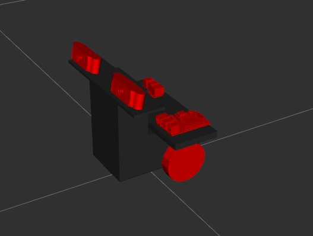

Navigate toIndoor_SLAM/src/auto_scripts/pi folder and execute run_stereo_streamer.sh.
The left Camera should turn on first and 20s later the right camera should turn on.
On the laptop navigate toIndoor_SLAM/src/auto_scripts/pc/ folder and execute run_receiver.sh
On a new command line start rqt by typing rqt
Add 2 image_view plug-ins to view the camera feed. Find it in Plugins Menu -> Visualization -> Image View
Select /camera/left/image_raw on one and /camera/right/image_raw on the other image_view dialogue box. The feed should now be visible and should be similar to the scree nshot shown below.
To shutdown all processes run >>$ pkill screen in command line on both pi and laptop
Stereo View as seen from RVIZ.
Motor Encoder Setup
follow the instructions and setup The hardware and turn on the power to encoders and motor
On the PI navigate toIndoor_SLAM/src/auto_scripts/pi folder and execute run_motor.sh
On the PC connect the Microsoft XBOX 360 controller
On the PC navigate toIndoor_SLAM/src/auto_scripts/pc folder and execute run_motor.sh
Use the joy stick to navigate. ( try pressing A if joystick does not respond)
Move to RVIZ window
In the RVIZ GUI choose the fixed frame as 'odom'
Add a display of type 'Robot Model'. the model of the robot matching the model we created should appear in the window. To know more about this please check $$$$$
When the robot moves in the real world, the robot model in the RVIZ should move by approximately the same amount. This is the base localization used for mapping.

Model of Robot as seen in RVIZ created using URDF files.
Please ensure that the Camera setup and Motor setup were successful before proceeding.
Running ORBSLAM
Please Check the ORBSLAM2 ROS setup before proceeding
On the PI Navigate toIndoor_SLAM/src/auto_scripts/pi folder and execute run.sh (starts both motors and streamer)
On the PC Navigate toIndoor_SLAM/src/auto_scripts/pc folder and execute run_base.sh
This executes ORBSLAM to the default settings including the recitification parameters. The callibration details are available in left.yaml and right.yaml
Screen shot of running ORBSLAM.Screen shot 2 of running ORBSLAM.
Running RTAB
On the PI Navigate toIndoor_SLAM/src/auto_scripts/pi folder and execute run.sh (starts both motors and streamer)
On the PC Navigate toIndoor_SLAM/src/auto_scripts/pc folder and execute run.sh
Occupancy Grid Created using RTAB.>
3D reconstruction using RTAB.